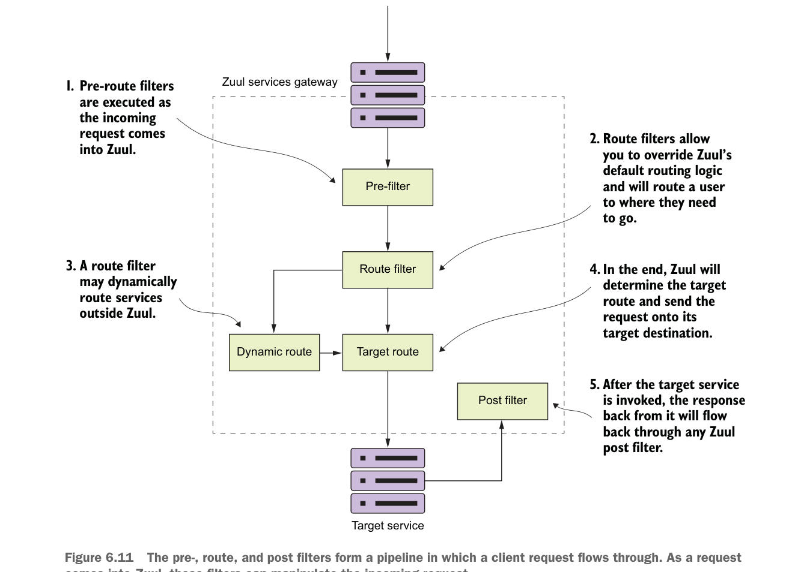

Pre-, route và post filter tạo thành một pipeline mà yêu cầu client đi qua. Khi một yêu cầu đi vào Zuul, các filter này có thể thao tác yêu cầu đến.
- Sau khi Zuul thực thi các pre-filter đối với yêu cầu đến, Zuul sẽ thực thi mọi route filter đã được định nghĩa. Route filter có thể thay đổi đích đến nơi dịch vụ đang hướng tới.
- Nếu một route filter muốn chuyển hướng lời gọi dịch vụ tới một nơi khác với nơi máy chủ Zuul được cấu hình để gửi route, nó có thể làm vậy. Tuy nhiên, route filter Zuul không thực hiện chuyển hướng HTTP, mà thay vào đó sẽ chấm dứt yêu cầu HTTP đến rồi gọi route thay mặt người gọi ban đầu. Điều này